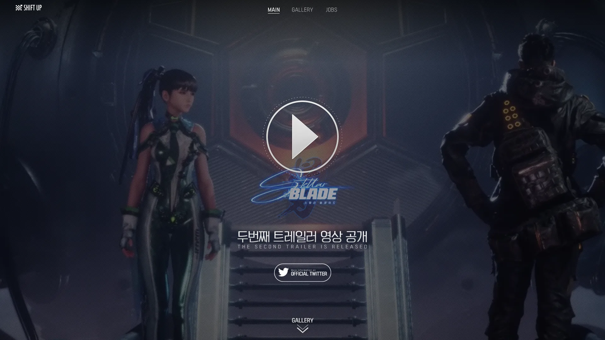
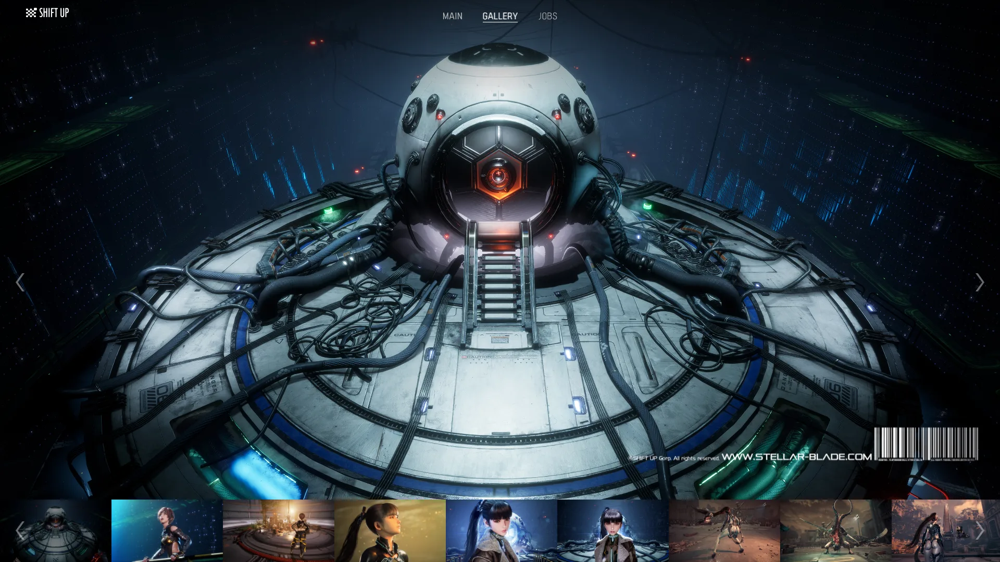
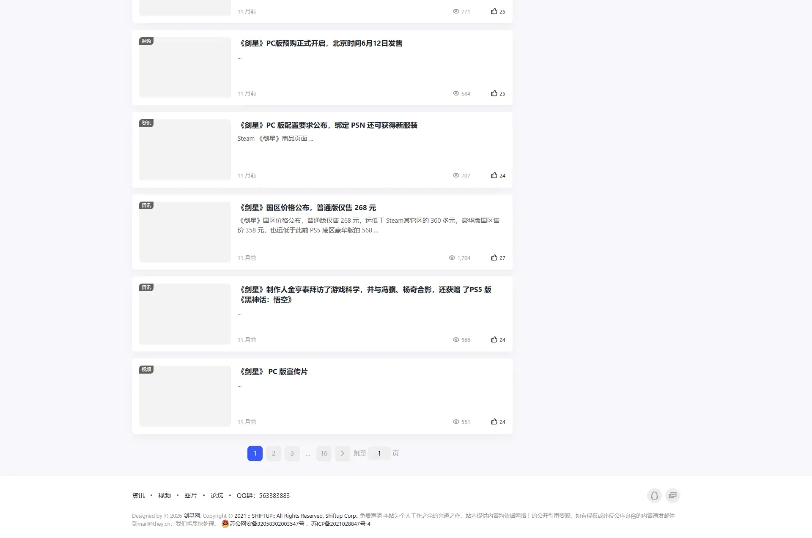
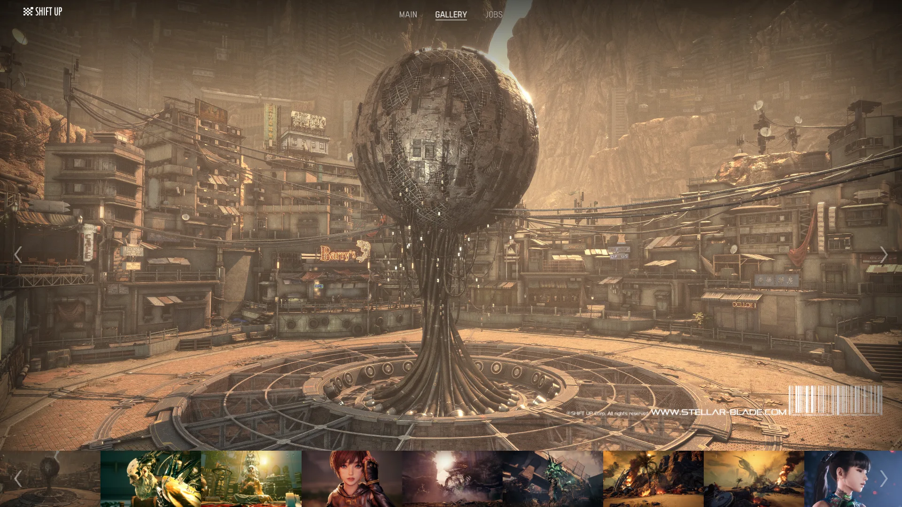

Shift Up 开发的韩式动作游戏，以精致角色建模和流畅战斗闻名。



想象一片远未来的废墟地球——首尔的高楼残骸上还挂着褪色的韩文招牌，沙尘暴把一切都涂成了锈黄色。天空中有一个纯白色的空间站 XION——那里是人类最后的避难所，极简主义内饰和冷蓝霓虹让它像一座漂浮的美术馆。地面是绝望的末世废土，天上是精致的未来乌托邦——这种极端反差就是整个游戏的视觉纲领。而从天上降落到地面来的人，她的精致程度让你怀疑她是不是走错了片场。
她叫EVE——第七空降部队精英战士，任务是夺回被异形生物Naytiba占据的家园。她的面容精致、身材完美、动作流畅得像芭蕾舞者在跳一支致命的舞——可她面对的是三层楼高的恐怖异形、血肉与金属融合的 Boss、和一个不断在她耳边说谎的空间站指挥官。Shift Up 把韩国手游的角色建模精度第一次成功搬上了 3A 主机——证明 K-美学可以打硬核市场。
那个在营地等你回来的搭档 Adam，他知道关于这片废墟的真相比 XION 告诉你的更多；那只你刚打了三十分钟才击倒的巨型 Naytiba，它的造型美得让你死前还在截图；那座你一直信任的 XION 空间站，结局会告诉你它的白色墙壁后面藏着什么。这不是一个关于拯救地球的故事，是一个关于「谁才是真正的入侵者」的故事——EVE 已经着陆了，你打算先探索哪片废墟？
K-美学 × 末日太空，是 Shift Up 把韩国手游级角色建模精度（完美面容、精致服装、时尚感造型）和末世废墟+太空科幻的硬核背景反直觉地缝合在一起的混血美学。底色是末日废土+太空站双层世界；变异在于角色的精致程度远超场景的破败程度——仿佛时装模特被扔进了末日世界。色彩锁定废墟锈黄 + XION 冷白 + Naytiba 紫红三色组合。整体调性介于《尼尔：自动人形》的优雅末世和韩国偶像 MV 的精致视觉之间。
「精致角色+末世背景」这条美学线的演化跨越了 25 年以上。1995 年《攻壳机动队》动画电影把「精致女性+废墟都市+科幻」的视觉组合推到了动画巅峰。2002 年《最终幻想 X》和 2006 年野村哲也为 FF 系列构建的「精致角色在奇幻/科幻末世」美学影响了一整代亚洲游戏设计师。2017 年《尼尔：自动人形》把「优雅人形+废墟世界」推到了 3A 标杆——2B 的哥特女仆装成为品类符号。2020 年代韩国手游（《Nikke》《胜利女神》）把 K-美学的角色建模精度推到新高度。2024 年《星刃》首次证明这种手游级精致度能扛起 PS5 独占 3A——Shift Up 从手游公司成功转型为主机开发商，K-美学正式登上全球 3A 舞台。
基于体验清单 · 审美偏好 · IP故事三维度综合选出